Over the course of the Super Family's rise to significance, its members have met many enemies, many of which are still around today, whether plotting against the Super Family or not. Here is a condensed list of the major ones, their information, and their current whereabouts.
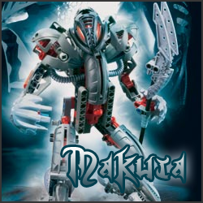
MAKUTA
 Makuta is a recent addition to the Super Family's list of nemeses, appearing shortly after the Super Family was finalized. He is known as the Spirit of Darkness/Destruction, and has expressed extreme perseverance in fighting the Super Family. He nearly achieved victory twice, once in the 1st movie, and was able to destroy the AC in the 11th movie. Makuta is a recent addition to the Super Family's list of nemeses, appearing shortly after the Super Family was finalized. He is known as the Spirit of Darkness/Destruction, and has expressed extreme perseverance in fighting the Super Family. He nearly achieved victory twice, once in the 1st movie, and was able to destroy the AC in the 11th movie.
He is the original reason the Toa joined the Super Family, and his appearance was the result of a massive mixup during the use of the SF's Portal Room. Dr. Seinyor had ended up there using the portals as a test, and ended up in Makuta's Lair. Scared, he quickly left, forgetting to close the "return" portal. Makuta saw through this portal, and through it he saw Earth, peaceful and calm. He gathered all the resources he could and departed through the portal, and before doing so he built a rough copy of himself and left it back on the island for the Toa to destroy, so they would not come looking for him. Oddly enough, this portal opened up right out front of the Lego Company...
Once the Toa defeated the copy, which was pathetically underpowered, they saw the interworld rift, gathered their friends and went through it, sensing Makuta had departed and they had been tricked. Once through, they reluctantly told their Mata Nui story to the Lego executives, and sought out the Super Family, which was all over the media. Dr. Seinyor listened to their mission and asked if they could join the Super Family. The Toa accepted, and pledged to stay in even if Makuta was defeated. From that point, Dr. Seinyor tasked the SF with repairing the desecrated Bionicle world, which had been corrupted due to the departure of the Toa's team and Makuta and his minions. The Family cleaned up the world and wiped any memory of the world's reclamation from its permanent inhabitants. The portal to the Bionicle Universe was then "portmarked", a process that distinguishes a portal to a specific world from all the others. Portmarks are only made for worlds that any member of the Super Family had come from.
Makuta then attacked a random locale, forcing the inhabitants to call for help from the Super Family via their "Hotline" number. Makuta had cleverly set up a trap for the Super Family, a vortex prison lamely known as "The Basket". His plan to imprison the Super Family rather than fight them would have worked, had the Toa been flying in the first wave of people on the way to the battlefield. The Toa attempted to bring him down theirselves, but with one last burst of energy, Makuta was able to imprison 3 of the Toa without battling them, and using his Krana, defeated Tahu. The Bohrok eventually came and avenged the Super Family, something that happened against Makuta's doing. If Tahu's sword didn't call for help, Makuta would have flawlessly defeated the SF.
In the 3rd movie, Makuta's Revenge, Makuta came back much stronger, prepared to take the full brunt of the Super Family's attack. He failed in this foolish ambition, as the SF was able to wear him down. In the 4th movie, his essence attempted a weak, half-hearted attack on the Toa, but ultimately fell to Wairuha, the combined force of Gali, Kopaka, and Lewa. Once the Toa attempted to Escape From Mata Nui in the 5th movie, he was able to call onto his scattered power and stage a full powered assault like that from the 3rd movie, but once again fell in the same way as he did during the 3rd movie. Again, he came back in the 7th movie, splitting his essence in half, claiming the one was the Evil Brother. Once again, he lost. In the 8th movie he actually teamed up with a fellow evilie, Kal. These two were AGAIN defeated the same way, but in the end of the 9th movie Makuta promised he would be back...
Back in the 11th movie, Makuta started the Universal War, sending his troops and minions to distract the Super Family while he and the Evil Sister infiltrated the AC and shut off its shield generator. The AC was then attacked by an unidentified target, though some say its name was Nine Ball. The AC was obliterated, its parts flying into deep space. Makuta was attacked by the Super Family shortly after, in the 12th movie. It was the toughest battle thus far the Super Family has ever fought, with Dr. Seinyor needing help from the Seventh Toa and the Kanohi Vahi. Even with the Rahkshi and Bahrag, Makuta was defeated by a seemingly limitless amount of energy fired from Hyper Supernova Beam. He was sucked into the Portal of Chaos, the same thing that the Evil Brother had used against Dr. Seinyor so many years ago.
Makuta's whereabouts are still unknown to this day. However, he has not died due to his role in the balance of power in the universe. It is said that he still has a hand in the activity of evil, while remaining imprisoned... |
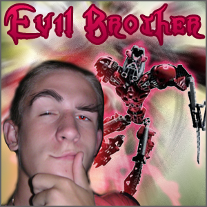
THE EVIL BROTHER
The Evil Brother, believe it or not, is Dr. Seinyor's twin brother, the two being early in their lives. The two never liked each other, and by being separated their lives improved. At least for Dr. Seinyor. The Evil Brother was left in charge of the Evil Sister, a baby at the time. He hated his brother for this, and was forced to work from a very young age to support two people alone.
One day, he was watching TV, when he saw the newspeople interviewing someone that looked like his hated brother, only much stronger. After a few minutes of learning about him via the interviewer's questions, The Evil Brother found out that it WAS Dr. Seinyor, and apparently he had aquired superpowers and saved an entire town.
Jealousy engulfed The Evil Brother, and he suddenly wanted nothing more than to see his hated brother fall. The only thing to do was embrace Evil as a way to bring him into the domain of the Powerteam. He did so, and aquired powers comparable to those of Dr. Seinyor's a few days later, from an unknown source. He began plotting against the Powerteam until his Master Plan, which involved stealing Pokemon from the Powerteam, failed (see History). He was banished away to Archovia, to wait in eternal darkness for years to come.
Once Makuta had joined him there, the two explained their situations, and then Makuta got an idea. Makuta explained that it was nearly impossible to defeat him, for he was responsible for balance in the universe. Thus, he would support the Evil Brother in his compaign against the Super Family.
With Makuta's guidance, the Evil Brother gathered fighters from across the universe, including the Evil Sister, who had been lost since Makuta was defeated. The Evil Brother created a new alliance, one to counter the Super Family. He named it The Brotherhood of Makuta, and its sole goal is the defeat of the Super Family above all else. The Evil Brother is planning to attack the Super Family, possibly starting the Second Universal War, the only question is when...
The Evil Brother is one of the Dark Titans, and has control over all of the powers of the Rahkshi. His Bionicle name is Sidorak, and his Rhotuka spinner can make anyone obey him. He is not part of the Four Horseless Horsemen, but in order for him to be defeated, all of the Horsemen must be killed. Even then, he fights with the Evil Sister, another Dark Titan who is not in the Four Horseless Horsemen. |
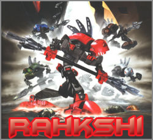
The Rahkshi
The Rahkshi first appeared in the Universal War, and they are known as the Sons of Makuta. Each one is meant as the Evil equivalent of the Toa, but without the traditional elemental powers. They use various wormlike creatures known as Kraata like Kanohi. Each one has a specific power in the Rahkshi synthesis process. They were part of Makuta's army of minions, and are now in the Brotherhood of Makuta. At first, they completely disobeyed The Evil Brother, but was convinced by Makuta to obey him, as he was their last hope.
They are still considered immensely strong, even compared to the new recruits of the Brotherhood of Makuta. |
| Name |
Power |
Description |
| Turahk |
Fear |
Turahk is the Master of Fear. Using his staff, Turahk can induce anything from slight unease to sheer terror in his foes. A being struck by the blast will either run away in panic or remain rooted to the spot in sheer terror. |
| Guurahk |
Disintegration |
Guurahk is one of the most cunning of the team. When she uses her tool, a web of cracks appears in the target, and eventually it collapses to the ground. But the staff would be purely nothing without Guurahk's skill at divining weaknesses - she's able to "see" the stress point in a structure or a foe's weakness, and target it immediately. Guurahk's staff can shoot a cone of dark energy, disintegrating whatever it hits. |
| Lerahk |
Poison |
The tip of his staff can poison anything - plants, animals, soil, or any foe he might choose. Unlike Kurahk and Turahk, his power does not work over a distance - the staff must be in physical contact with the target. He is not the smartest of the Rahkshi, but his power is enough to destroy things with ease. He is also very patient, and will wait for great periods of time until his enemy slips up. |
| Panrahk |
Fragmentation |
This serpent's Staff of Explosions can send a "bomb" through the ground and air, and cause it to explode on command. He is so powerful that the ground under him cracks as he walks, in compliance to his explosive, violent nature. |
| Vorahk |
Hunger |
Stealthy and ruthless in equal measure, Vorahk uses his Staff of Hunger to suck the strength away from his enemies, and use it himself. It is this method of draining that makes him as fierce as he is. |
| Kurahk |
Anger |
Though she is fast and strong enough to down any foe, Kurahk perfers to turn her opponents against each other. Her staff can fire rings of anger, causing the target to be consumed by rage. Even the Toa Nuva are not immune to its power, which magnifies any difference of opinion into an all-out physical conflict. Kurahk is also a victim of anger, however; her ability to become reckless is easily triggered, and the other Rahkshi always have opinions conflicting with hers. His Kraata form is just as angry when exposed. |
|
|
List of Possible Rahkshi; the type of Kraata that is turned into a Rahkshi gives it a special ability.
| Power |
Rahkshi |
Power description (Rahkshi may be stronger than described) |
Color |
| Accuracy |
|
Can strike the smallest target at a great distance or in any environment or condition. |
blue body with purple limbs |
| Adaptation |
|
Instantly adapts to take maximum advantage of any condition or situation. |
black body with purple limbs |
| Anger |
Kurahk |
Has the power to turn fighters against one another in anger. |
white body and limbs |
| Chain Lightning |
|
Controls devastating bolts of chain lightning that leap between multiple targets. |
silver body and limbs |
| Chameleon |
|
Has the ability to become completely invisible in any environment. |
red body with gold limbs |
| Confusion |
|
Extended proximity can reduce fighters to mindless babbling. |
gray body with green limbs |
| Cyclone |
|
Has the power to create and control powerful cyclones at will. |
black body with white limbs |
| Darkness |
|
Has the power to consume all light in a large area; only Takanuva's light is stronger. |
black body with red limbs |
| Density Control |
|
Complete control over own density and that of any object in physical contact. |
black body with green limbs |
| Disintegration |
Guurahk |
Has the power to reduce even protodermis to dust. |
blue body and limbs |
| Dodge |
|
Impossible to physically strike, no matter how swiftly or powerfully. |
red body with silver limbs |
| Elasticity |
|
Can stretch incredible lengths in the blink of an eye. |
tan body and limbs |
| Electricity |
|
Powerful electrical field can be controlled to surround or stun distant objects or creatures. |
blue body with white limbs |
| Fear |
Turahk |
Has the power to bring fear to the hearts of even the bravest fighters. |
red body and limbs |
| Fire Resistance |
|
Strong enough to withstand the heat of Tahu Nuva’s magma swords. |
aquamarine body and limbs |
| Gravity |
|
Uses gravity control to crush any object in visual range. |
blue body with silver limbs |
| Heat Vision |
|
Powerful long-range heat vision can ignite any object within sight. |
yellow body and limbs |
| Hunger |
Vorahk |
Has enough strength to drain the energy of Dr. Seinyor. |
black body and limbs |
| Ice Resistance |
|
Impervious even to the cold of Kopaka Nuva’s ice blade. |
red body with yellow limbs |
| Illusion |
|
Can create and control multiple realistic illusions anywhere within sight. |
tan body with blue limbs |
| Insect Control |
|
Powerful enough to control and command an entire hive of Nui Rama. |
orange body and limbs |
| Invulnerability |
|
Absolutely invulnerable to physical harm of any kind. |
grey body and limbs |
| Laser Vision |
|
Fires powerful eye-beams that can burn through solid protodermis. |
red body with orange limbs |
| Magnetism |
|
Possesses magnetic powers strong enough to tear a slab of protodermis in two. |
black body with gold limbs |
| Mind Reading |
|
Powerful enough to invade the mind of any being. |
light purple body and limbs |
| Molecular Disruption |
|
Has the power to utterly disintegrate any inorganic object with a touch. |
light blue body and limbs |
| Plant Control |
|
Has total control over any plants in the area. |
green body with brown limbs |
| Plasma |
|
Has the power to instantly melt any object into vapor. |
tan body with red limbs |
| Poison |
Lerahk |
Dangerously toxic. |
green body and limbs |
| Power Scream |
|
Power scream shatters stone and can be heard all across the island. |
purple body and limbs |
| Quick Healing |
|
Almost indestructible. |
black body with brown limbs |
| Rahi Control |
|
Has absolute control over every living Rahi in the near area. |
magenta body and limbs |
| Shapeshifting |
|
Has total control over its own shape, although its mass cannot change. |
blue body with gold limbs |
| Shattering |
Panrahk |
Has the power to create explosions in the immediate area. |
brown body and limbs |
| Silence |
|
Aura of silence is powerful enough to temporarily deafen a fighter. |
gray body with black limbs |
| Sleep |
|
Has the power to instantly put an entire village into deep sleep. |
maroon body and limbs |
| Slowness |
|
Able to rob a fighter of all speed as long as it remains nearby. |
blue body with yellow limbs |
| Sonics |
|
Blasts distant objects with powerful waves of sonic force. |
yellow body with green limbs |
| Stasis Field |
|
Has the power to freeze a creature in near-permanent stasis through eye contact. |
blue body with black limbs |
| Teleportation |
|
Has the power to teleport itself through any wall or other structure. |
blue body with green limbs |
| Vacuum |
|
Has the power to create gale-force winds or instantly reverse their flow. |
orange body with black limbs |
| Weather Control |
|
Can manifest powerful, dangerous thunderstorms and blizzards at will. |
gold body and limbs |
|
|
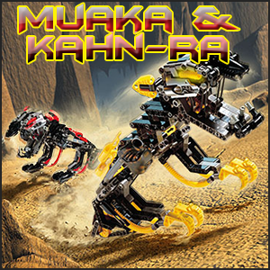
Muaka and Kahn-Ra
Muaka (yellow) and Kahn-Ra (red) are two Rahi under control of Makuta/The Brotherhood of Makuta. They are named for their respective species of Rahi. The two were some of the first Rahi infected and enslaved by Makuta, and have been with him since just before Makuta attack the Super Family for the first time. Over the years of battle, they have expressed some good intentions, simply fighting because of their obscure hunger for chewing on body parts, especially Bionicle ones.
During the Universal War, the two brothers gained a sister, known as Rangi/Vinkai (the name was mysteriously changed between the 11 and 13 movies). Her existance was shortlived, as Dr. Seinyor easily defeated her. Upon the reformation of Evil's fighting force, she was scrapped at Makuta's orders, and her parts were used to make even more terrifying "segment bosses".
The two remain a part of the Brotherhood of Makuta to this day, remaining some of its primary fighters. The two can be weakened by removing the tubes that hold their "mask heads", causing their arms to literally fall off and rendering them nearly motionless (although their movement is already limited by the chains that connect them to their Segment Boss). Muaka is most commonly seen using infected Great Haus and Kahn-Ra is mostly seen wearing infected Noble Hunas as masks, though these have changed over time as Makuta experimented with infecting different masks. |
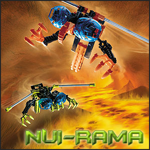
The Nui-Rama
The Nui Rama and their various forms have been a part of Makuta's fighting force since the beginning, at first as a single combined "Nui Rama". Later on, they changed back and forth between this form and two separate ones, with one being called "Nui-Rama" and the second being called "Nui-Ramu". They have always been fairly weak, as Tahnok one-shotted the combined form in the 1st movie. They have always been loyal to Makuta despite this weakness, however they were never really effective due to the fact that they were knocked out cold most of the battles.
Reviewing the performance of his minions after the Final Battle, Makuta decided that the Nui-Rama were a waste of parts, and subsequently ordered them scrapped to be used in the construction of more effective Segment Bosses. However, their spirits may still be inside a machine of the new Brotherhood of Makuta alliance... |
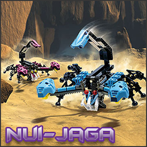
The Nui-Jaga
The Nui Jaga appeared about halfway through Makuta's campaign, and have been effective fighters because of their venomous tail attacks. However, they are not as tough as Muaka and Kahn-Ra, having a lack of brute force. They are also extremely vulnerable to mind control (as all the Rahi are) and, unlike the others, are vulnerable to persuation that the Super Family is a better cause to fight for.
Makuta, considering all of this after he was defeated, decided to have the Evil Brother reduce them to a much smaller size, keeping only the features that were useful in the first place. The Nui-Jaga will now be used in the Brotherhood of Makuta as an annoyance to Super Family fighters. |
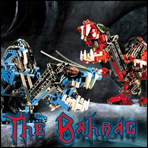
The Bahrag
Former leaders of the evil Bohrok swarms, the Bahrag Cahdok (red) and Gahdok (blue), seek revenge on the Super Family for turning their own Bohrok swarms against them. They teamed up with Makuta and friends, finding a common cause in them.
The Bahrag remain extremely powerful foes of the Super Family, using their strong jaws and mass to overpower their targets. They use a biting strategy similar to that of Muaka and Kahn-Ra, except they are capable of taking opponents out with one snap of their jaws and sharp teeth. However, they are much less of a threat to the Super Family now that their "weak spots" are known to all members. Attacking the weak spot, if hit in the right way, will render that Bahrag immobile.
The Bahrag remain loyal supporters of Makuta's cause, being the most determined out of the bunch. They are even avid supporters of the Evil Brother and the new Brotherhood of Makuta. Due to the Rahkshi revering the Bahrag, they help to keep the Rahkshi working together with the Evil Brother. |
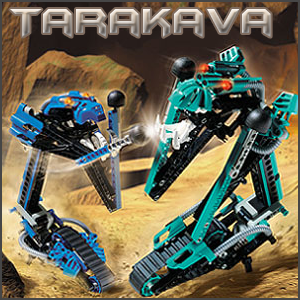
The Tarakava
The Tarakava are giant Rahi who have just recently been added to the Brotherhood of Makuta. Their primary attack is lashing out with one of their two fists, and they are capable of putting out a colossal amount of damage in a short time. Rakaz (aqua) and Raxez (blue) rival the Bahrag in power.
The two have a single mask that is well-guarded. Their jaws must be released in order for the mask to become removable, and all the while they are fighting fiercely to prtect themselves. They are extremely loyal to the Evil Brother and Makuta. |
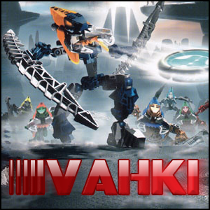
The Vahki
The Vahki are hordes of roughly humanoid beings that fire disks and stab with their weapons to attack. They have been recruited as lieutenants in The Brotherhood of Makuta's army. They are capable of releasing an array of destructive powers.
The Brotherhood's main base churns thousands of these out every hour, comparable to the Super Family's Battle Droid factories and Bohrok nurseries.
They are trained to take orders from any high ranked Brotherhood of Makuta member, and will follow instructions without question. This makes them vulnerable to mistakes of their leadership, as they have no common sense like Battle Droids do. |
| Name |
Power |
Description |
| Nuurahk |
Command |
Nuurakh prefer to strike with swift ambushes. They have been known to start fights with each other that other Vahki have to break up. Nuurakh carry Staffs of Command that fill a target's mind with one single directive that they will follow until the stun wears off hours later. |
| Bordahk |
Loyalty |
Bordakh love to chase offenders and have even been known to let targets go in order to continue the pursuit. The Bordakh's Staffs of Loyalty make victims such zealous supporters of order that they will even help the Vahki apprehend their friends. |
| Vorzahk |
Mind Erasing |
Vorzakh won't let anything stand between them and a quarry - literally. They will level everything in the path of their pursuit. Their Staffs of Erasing can temporarily eliminate a target's higher mental functions, leaving only their motor functions intact. |
| Zadahk |
Suggestion |
Zadakh are fearless to the point of recklessness and are always eager to jump into a fight. Their Staffs of Suggestion leave victims willing to follow orders from just about anyone for several hours. |
| Rorzahk |
Presence |
Rorzakh are relentless in their pursuit, continuing even if it means their own destruction. Their Staffs of Presence allow them to see and hear everything that their target does, often without the target even being aware that the Vahki are eavesdropping. |
| Keerahk |
Confusion |
Keerakh have an uncanny ability to deduce a target's destination and then get there first. They carry Staffs of Confusion that distort a target's sense of time and place. |
|
|
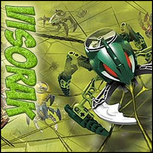
The Visorak
The Vahki are titanic legions of spiderlike machines very much like the Bohrok under the control of the Super Family. They are highly trained and ruthlessly efficient soldiers. All Visorak can generate and fire Rhotuka spinners with the power to paralyze opponents, and each breed also has its own unique spinner power. Their Hordika venom mutates Rahi severely. They can also make spiderwebs; and use this material to encase victims in cocoons (sometimes laced with the Hordika venom) or communicate through vibrations in the webs. |
| Name |
Description |
| Vohtarak |
Vohtarak are incredibly aggressive, preferring to wildly charge and launch Rhotuka spinners. While they are unable to control fire, they have a natural resistance to heat and have spinners capable of causing a great burning pain in their victims; so powerful that the victims are unable to concentrate on anything else. The Vohtarak are also able to have "berserker charges" during which their outer shells become almost impervious to harm. Because of this, they are used as 'shock troops' for large attacks. |
| Boggarak |
Boggarak serve as bodyguards of The Four Horseless Horsemen. They are the fastest of the Visorak, and have a great variety of powers. Above water, their Rhotuka spinners dehydrate their target, reducing it to dust. Under water, their spinners cause the target to inflate and float to the surface. The Boggarak also create sonic hums, which they use to transmute solid matter into gas, stone, etc. |
| Keelerak |
Keelerak are incredibly unpredictable, fighting one moment, disappearing the next. Keelerak have incredibly powerful Rhotuka, able to dissolve through almost anything with a powerful acid. Their feet are also razor sharp, and they are able to leap into the air and spin about, like gigantic buzzsaws. |
| Roporak |
Roporak are able to change colors and camouflage into their background. They prefer to work underground, but are often positioned at high points, blending in with their backgrounds to spy on others. Roporak use this power to wait until their foe has been weakened, then they intercept, spitting webbing and firing their disrupting Rhotuka, which causes a form of "power outage" in their targets. Roporak can fire their spinners the furthest of all the Visorak breeds. |
| Oohnorak |
Oohnorak aren't known for being leaders. Instead, they are followers, always willing to obey, and be abused (When a mechanical battle ram isn't on the scene, Oohnorak have been known to be used instead). Oohnorak, however, aren't stupid. While their Rhotuka power isn't very aggressive, having the power to numb a foe so they can't escape, they also have the powers of mimicry and limited telepathy: Oohnorak can telepathically read the mind of a target, then mimic the voice of their target's companion, luring them into a trap. |
| Suukorak |
Suukorak are masters in planning, knowing when they should attack or retreat. Suukorak produce a powerful Rhotuka that creates an electrical cage around their target, which shrinks each time the target moves. They have a natural resistance to cold, and can also slow down their life processes to almost nothing, making them extremely hard to detect. |
|
|
|
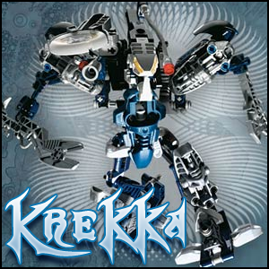
Krekka
Krekka is one of the Dark Hunters, the team of six warriors who aim to bring chaos to all of reality and strain the Super Family's resources to the breaking point. He is the most physically well-rounded member of the team. Krekka is able to drain the power of his opponents, much like Vorahk of the Rahkshi, only much more quickly. With his shoulder-mounted Kanoka launcher, he can rapidly fire the disks and subsequently decimate his opponents with their sheer power and various effects.
Krekka is also able to use a special attack that applies a fatal toxin to his disk. After charging it and firing, if the disk hits the target, it will instantly deal 50% of the target's maximum health in damage and then slowly, painfully transfer their health/shield to Krekka for as long as he remains alive or they are alive. This makes him extremely effective against opponents, as it is a near-guaranteed way to defeat them.
What makes Krekka difficult to defeat is the fact that all of the damage he does is returned to him as health. Therefore, his poisoned Kanoka would return 200% of the damage dealt by its damage over time effect.
Specialization: Drain Life/Strength |
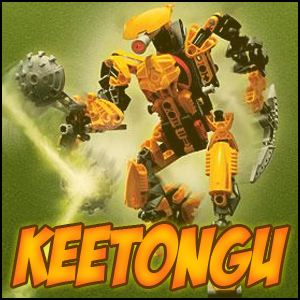
Keetongu
Keetongu is arguably the most destructive of all the Horseless Horsemen, for he is known as "The Plaguebearer", and his style of combat is making his victims suffer while he does little after applying his pestilences. While he has a diverse arsenal of all sicknesses at his disposal, his most common one, Unstable Affliction, can be applied with one swipe of his blade. The victim's health is gradually depleted, and it can only be stopped by death or the killing of Keetongu. If an ally tries to dispel it, it will immediately blast the helper for 75% of their HP and knock them out cold for a few minutes.
Another one of his skills is to reflect his target's attacks back at them. If Keetongu chooses too, he can absorb the attacks with his shield and then charge his Rhotuka with it, firing it back in one blast.
The Rhotuka can also launch his most powerful attack, Seed of Corruption. Once it hits a target, it plants an infectuous seed in them, which will explode after dealing 10% of their health. Any ally close to the victim will be instantly killed if not properly prepared.
Keetongu has very little physical strength, but he has lots of defensive skills, allowing him to "wait out" his victims' deaths.
Specialization: Affliction (Damage over time) |
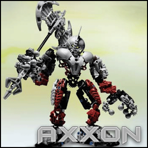
Axxon
Out of all the Four Horseless Horsemen, Axxon is undoubtedly the most powerful. With only one swipe of his colossal double-edged axe, he can take out any member of the Super Family. He is also the hardiest of the Four, able to take tremendous amounts of damage. Axxon's incredible might is offset by his slowness. He walks slowly, and it takes a lot of straining and time to recharge the great axe. Axxon's thundering steps strike fear into the hearts of even the most valorous of heroes.
His mask, the Kanohi Rode, is the Great Mask of Truth and it allows him to see through illusions and the lies of his enemies. This mask is well-suited for his combat style as it allows him to clearly see his targets as they exist in the current moment, and thus allowing him to make the most of his physically straining attacks.
Axxon's special attack, Mortal Tomahawk, is to throw his axe at his opponent, causing normal damage (100% of target's health). It takes three times the effort to throw the axe effectively versus simply swinging it.
Specialization: Strength |
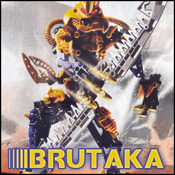
Brutaka
Brutaka is a master of blades, knowing exactly where to cut, to slash, to sever. His twin blades are serrated on one edge, while razor-sharp on the other. He moves so fast on the battlefield that some say that he can make his targets bleed to death just be looking at them. Brutaka is a master of stealth too, making him a deadly assassin and a force to be reckoned with. He is extremely quick
Brutaka's mask, the Kanohi Olmak, is the Mask of Dimensional Gates and it allows the user to open portals to other places and universes. The portals do not need the user to sustain them, and only disappear once they are used.
One of his most powerful attacks is Garrote, an attack that causes the victim to bleed until the their death or until Brutaka is defeated. Unlike Krekka's poisoned Kanoka attack or Keetongu's Unstable Affliction, it will also weaken the target as they lose blood. Another attack is his Backstab, which he can only use while sneaking around. Brutaka can instantly kill a target with this attack if he is behind them.
Specialization: Assassination |
| |
| |
| |
| |
|